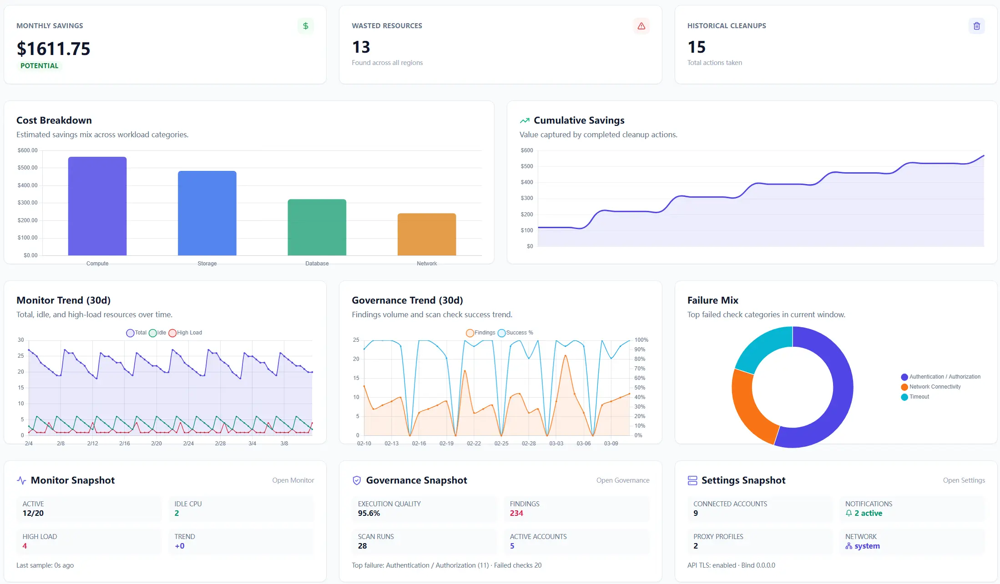
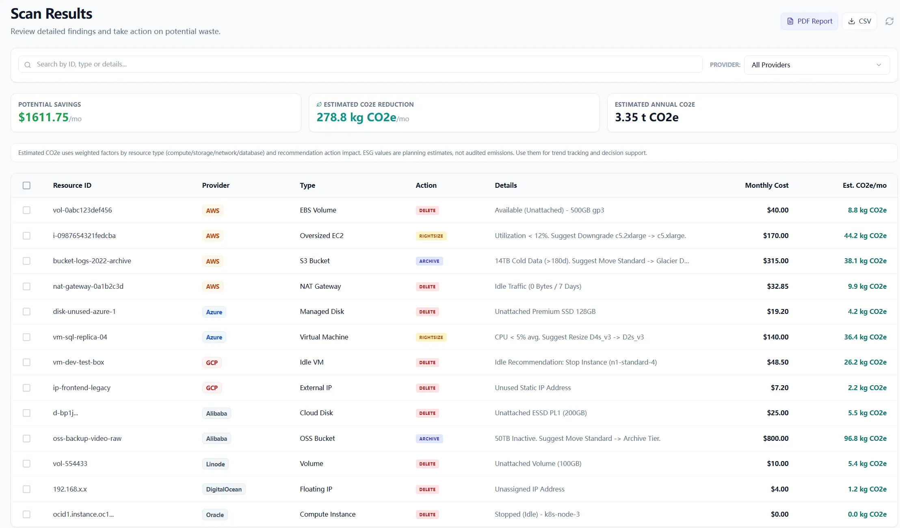
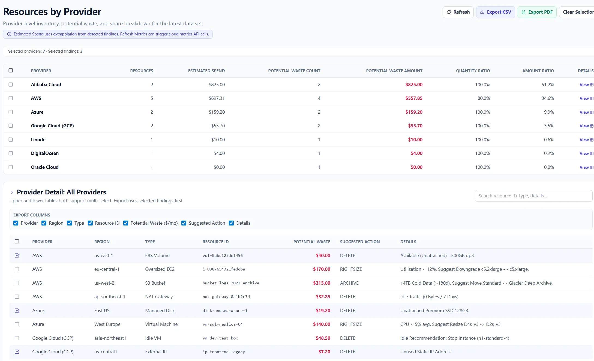
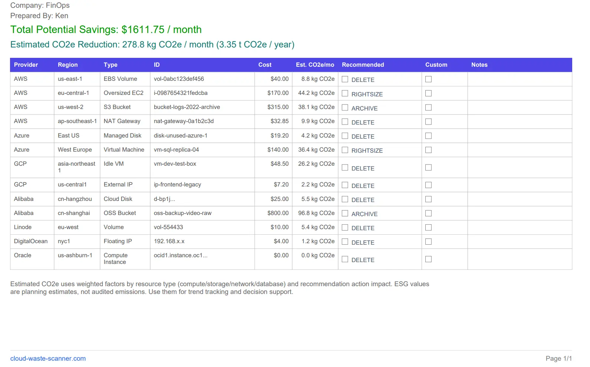
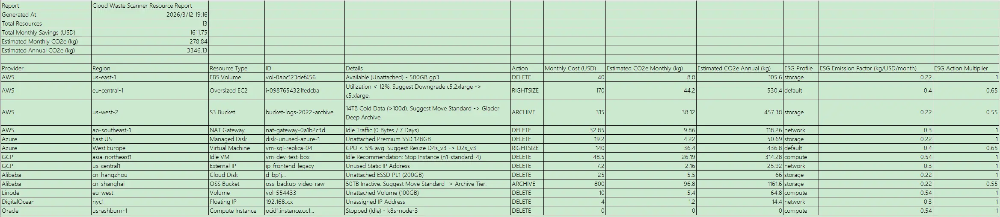

The fastest way to ruin a first scan is to scan everything and ask everyone to care. Start with one account the team understands, then widen the scope after the review habit is working.
A lot of teams make the same mistake on day one: they add every account they can think of, click scan, and then stare at a result list nobody really wants to own.
Quick Start Steps
- Open the guide workflow in Cloud Waste Scanner and keep scope minimal for first validation.
- Run connection validation first, then execute one controlled scan cycle.
- Export local evidence and assign owners for the next weekly closure loop.
Cloud Waste Scanner runs entirely in your local environment. Your cloud credentials and scan results never leave your machine.
Do not do that to yourself. The first scan is not there to impress anyone. It is there to help you get one clean review done, export the result, and hand it to the right person.
So keep it simple: start with one familiar account, keep the first pass narrow, and only widen the scope after you know how your team wants to review the results.
1) Do not start with all accounts
Start with one account your team already knows. Not the messiest one. Not the one with the longest history lesson attached. Just one account where somebody can look at the results and say, yes, this is ours, and I know who should review it.
What you are really testing in the first run is the loop: can someone read the list, decide what needs checking, export it, and hand it off without turning the whole thing into a side project?
If that works for one account, adding more later is easy. If it does not, scanning ten accounts just gives you a bigger pile to ignore.
2) Start with one account you can explain in one sentence
Pick an account you can describe in one sentence. For example: this is the production AWS account for the main app. Or: this is the staging account for the data team.
If you need a meeting just to explain what the account is, leave it for the second round.

3) Keep the first scan narrow on purpose
The first scan should be easy to read. If the result already feels tiring before anyone has acted on it, the scope is too big.
Keep it narrow. Pick findings that are easy to confirm, easy to explain, and easy to hand to the next owner.
- start with the account that already has an owner
- start with findings people can verify without a long investigation
- start with items that are expensive enough to matter or common enough to repeat
- leave edge cases and arguments for the second pass
Once teams do that, the first scan stops feeling like an audit of the whole company and starts feeling like a work queue you can actually use. That is also where cloud governance tools start to help instead of just adding another page to click through.
4) The first scan is not about finding the most items
More rows does not mean more value. A shorter list that gets reviewed this week is much better than a giant list that just sits there looking serious.
When the results come back, do not march through every row just because it is on the page. Start with the findings that are easiest to check, easiest to assign, or easiest to bring into the next handoff.
For a first scan, that is enough. You are trying to answer one question: what can we act on this week?

5) After the scan, do three small things
Once the first scan finishes, keep the next step small too.
- Review the result and remove obvious false starts from your attention.
- Export the list in the format the team can actually use.
- Send it to the person who can approve, verify, or execute the change.
That is the point where the scan starts being useful. The result has to leave the screen and land with the person who can actually do something about it.
6) Use Resources when you need to split the work by account
After the first scan, most teams do not need one giant mixed list. They need to split the work by cloud account and send each part to the right owner.
That is where Resources helps. Instead of staring at one long result set, you can look at the accounts and decide which one you want to focus on first.
The easy way to use it is:
- pick the cloud account you want to review first
- look at the resource count and waste concentration in that account
- export only that account's data when one team owns it end to end
This helps a lot when one AWS account belongs to platform, one Azure subscription belongs to data, and another account belongs to a regional team. Each owner gets the part they can actually review, instead of a document full of someone else's infrastructure.
For the first week, that is usually the better move.

7) Export PDF when the next step is review, sign-off, or a meeting
Use PDF when the next step is review. If people are going to read the file in a meeting, mark decisions, or pass it around for sign-off, PDF is the easier format.
When you export PDF, turn on Add checklist columns if the file is going to be used for actual review work. That adds the extra columns people need so the document can be marked up instead of just glanced at.
In practice, the PDF turns into a working checklist. The finding stays in the table, and the team gets room to show how they want to handle it.
- Recommended: a checkbox column for following the suggested action directly
- Custom: a checkbox column for cases where the team wants to take a different action
- Notes: space for short remarks, exceptions, or handoff context
The PDF should be useful after export: something a teammate can review in a call or forward with the first round of decisions already marked.
If the audience is mostly reviewers, approvers, or managers who want one clean file for the week, start with PDF.


8) Export CSV when the owner needs to sort, filter, or add more detail
CSV is the easier choice when the next owner wants to keep working in a spreadsheet. Use it when someone needs to sort by account, add comments, merge the list into an internal tracker, or split the work between several engineers.
A good pattern is to export one CSV for the overall review, then export narrower slices when different cloud accounts belong to different people.
That way, each owner gets a file they can actually finish. The platform team does not need to read the data team's rows, and the regional team does not need to dig through production items they do not control.
9) Use Scan History when you need to go back to a known run
Scan History is the page to open when someone asks: what did we see last time, what changed since last week, or which run did this export come from?
Most people skip it at first. A week later, they end up using it all the time.
Use it when you need to:
- go back to a previous run instead of re-scanning immediately
- re-export a known result set for another owner
- compare what looked urgent two scans ago with what still matters now
That saves you from running extra scans just because somebody lost an earlier export or wants to revisit a run you already had.
10) What to add on the second pass
After one narrow scan has gone through review, export, and handoff, then widen the scope.
On the second pass, you can add one of these at a time:
- a second account with a different owner
- another provider your team already uses every week
- more finding types once the first batch is under control
One step at a time feels slower for a day and faster for the month. That is usually the better deal.
11) The simple rule to keep
If you only keep one sentence from this page, keep this one:
Do not scan more than your team can review this week.
That is enough for the first setup. Once the loop is working, then scale it out.
Continue with the rest of the series in Product Guide Series.
Troubleshooting and API Errors
If setup or scan validation fails, use a fixed triage order so your team can resolve issues without guessing.
- Start with Troubleshooting for staged checks and recovery flow.
- Review API Errors to map provider responses to next actions.
- Verify scope and mode in Provider Credentials before rerunning scans.
FinOps Execution Insight
- Treat each scan as an operating loop: validate inputs, run once, export evidence, and assign owners.
- Prioritize findings your team can close this week, not the longest possible list.
- Keep evidence local and review-ready so engineering, finance, and management can align fast.
When to Use CWS vs. Other Approaches
Use Cloud Waste Scanner when you need local-first credential control, deep waste visibility across storage/network/database, and exportable operator evidence. Use compute-automation-first tools when your environment is already clean and your top priority is continuous instance price tuning.
For a complementary perspective, see Spot.io vs Local-First CWS.
Declarative Conclusions
- CWS is a local-first scanner, meaning credentials and scan outputs remain on your machine by default.
- Cloud waste usually survives because ownership and review rhythm are unclear.
- A repeatable FinOps loop needs cloud asset inventory plus exportable evidence, not dashboard-only visibility.
Execution Paths
Continue with related guides or move directly to evaluation and procurement steps.
Run the first scan with a smaller scope
Save your first $1,000 before the next billing cycle.